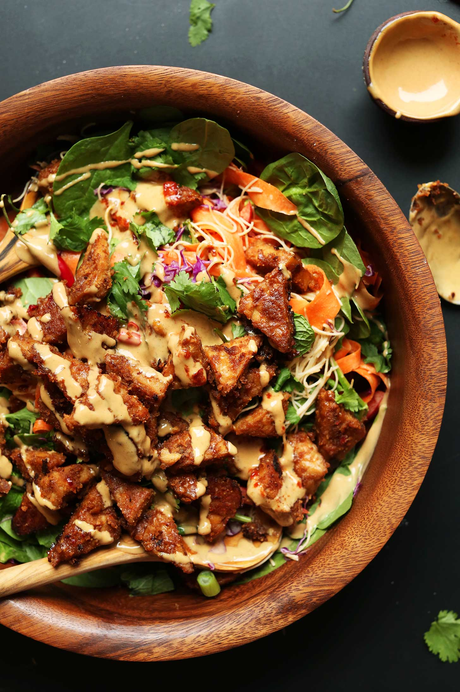

Blissed-Out Thai Salad with Peanut Tempeh by Minimalist Baker
Ingredients
- 6 ounces vermicelli noodles (I like brown rice noodles)
- 2 medium whole carrots, "ribboned" with a vegetable peeler or spiralizer
- 2 stalks green onions (finely chopped)
- 1/4 cup chopped cilantro
- 2-3 Tbsp chopped mint
- 1 cup loosely packed spinach (chopped)
- 1 cup thinly sliced red cabbage
- 1 medium red bell pepper (thinly sliced)
- 1 batch Marinated Peanut Tempeh (optional)
- 1/3 cup salted creamy peanut butter, almond butter, or sunbutter (plus 1 extra Tbsp as original recipe is written)
- 3 Tbsp gluten-free tamari (or soy sauce if not GF)
- 3 Tbsp maple syrup
- 1 tsp chili garlic sauce (or sub 1 red Thai chili minced // or 1/4 tsp red pepper flake // amounts as original recipe is written)
- 1 medium lime, juiced (yields ~3 Tbsp or 45 ml)
- ~1/4 cup water (to thin)
Preparation
- Cook rice noodles according to package instructions, rinse, drain, and set aside to cool.
- To a large serving bowl, add cooked and cooled noodles, carrots, green onions, cilantro, mint, spinach, cabbage, and red bell pepper and toss loosely to combine. Set aside.
- Make dressing by adding peanut butter, tamari, maple syrup, chili sauce (or chili or red pepper), and lime juice to a small mixing bowl and whisking to combine. Then add warm water a little at a time until a thick but pourable sauce is achieved.
- Taste and adjust seasonings as needed, adding more maple syrup for sweetness, chili sauce (chili or red pepper) for heat, lime juice for acidity, or tamari for saltiness. Set aside.
- Add 1/2 of the tempeh (optional) and 1/2 of the sauce to the salad and toss. Then top with remaining tempeh and sauce. Serve immediately. Leftovers store well in the refrigerator up to 4-5 days, though best when fresh. I find that, if making ahead of time, it's better to leave the salad undressed and store the tempeh separately.